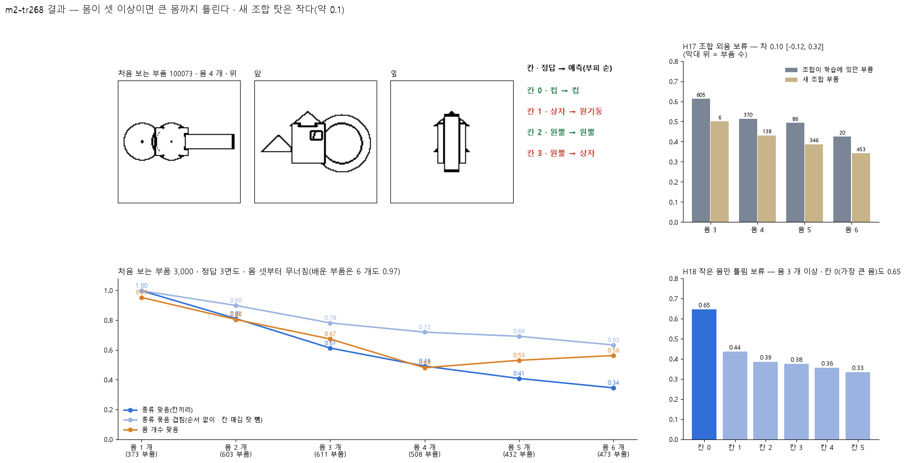

실험 m2_tr0268_h017_조합
목표 G1.2 view 모음 → 파츠별 CAD code(CadQuery · 그 전 「3 면도 → 파츠별 CAD」 · 지금 M2 는 위 · 앞 · 옆 고정 세 장만 받음 → 아무 각도 N 장으로 바꿀 것 · 11-20) · G1 첫 제품 — 피규어 · 메카 사진 여러 장 + 치수 → 숨은선 3 면도 + 파츠별 CAD · G0 임의의 이미지 → CAD 코드 · 빌린 가정 3: 생성기기하 · 정답3D · 정사영 · 갚는 계획: 진단 · 깨끗한 정답 3면도 · 생성기 부품 — 고칠 길은 view 입력 · m1 view · 원화CAD짝 시험지로 다시 봄 · 목표 시험지 값: 안 잼 (!)
처음 보는 부품에서 몸이 셋 이상이면 m2 가 몸 종류 · 개수를 못 맞히는 것은 조합을 외워서인가, 작은 몸만 틀려서인가?
판정 · H17 보류(새 조합 탓 약 0.1 · 구간 넓음) · H18 보류(가장 큰 몸도 0.65) — 처음 보는 부품 3,000 에서도 몸 1 개 1.00 → 6 개 0.35 로 무너짐을 다시 확인 · 조합 외움(차 약 0.1) · 작은 몸만(가장 큰 몸도 0.65) 둘 다 판정선 사이라 아니라고도 말할 수 없음(11-21 정정 · 처음 판정 문장은 「아님」 이라 보류를 넘어 말함 = 제 실수) · 혼자면 맞히는 몸을 다른 몸이 붙으면 못 알아봄 → 다음 H19: 몸을 하나씩 떼어 그린 3면도를 넣으면 알아보나(나누기 문제인지)
| 가설 | 주장 | 결과 | 근거 |
|---|---|---|---|
| H17 | m2 는 몸 하나하나를 알아보는 대신 부품의 몸 조합을 외운다 — 몸 1 · 2 개 조합은 학습에 거의 다 있고 3 개 이상은 새 조합이 많아 무너진다 | 보류 | 몸 3 개 본 605 · 새 6(0.61 대 0.50) · 4 개 본 370 · 새 138(0.51 대 0.43) · 같이 5 개 0.49 대 0.39 · 6 개 0.43 대 0.34 — 본 조합이 늘 0.08 ~ 0.11 높지만 본 조합도 몸 6 개면 0.43 · 몸 개수별 종류 맞음 1 ~ 6 개 1.00 · 0.81 · 0.61 · 0.49 · 0.41 · 0.35 · 개수 맞음 0.95 · 0.80 · 0.67 · 0.48 · 0.53 · 0.56 |
| H18 | 몸 3 개 이상에서 틀리는 것은 작게 묻힌 몸이고, 큰 몸은 처음 보는 부품에서도 맞힌다 | 보류 | 칸별 0.65 · 0.44 · 0.39 · 0.38 · 0.36 · 0.33 · 가장 작은 몸(마지막 칸) 0.43 · 몸 1 개 부품이면 같은 몸이 1.00 |
분석
한 줄로
물음: m2 가 처음 보는 부품에서 몸이 셋 이상이면 몸 종류 · 개수를 못 맞힌다. 몸 조합을 외워서인가, 작은 몸만 틀려서인가?
답: 둘 다 판정선 사이라 가르지 못했다(H17 · H18 보류). 다만 크기는 작다. 학습에 있던 조합이어도 몸이 많으면 무너지고(새 조합 탓은 약 0.1), 가장 큰 몸도 혼자면 1.00 인데 몸이 셋 이상이면 0.65 다. 혼자일 때 알아보는 몸을, 다른 몸이 붙으면 못 알아본다.
왜 이 실험을 했나
가 · 나 · 다 세 길이 모두 처음 보는 부품에서 막혔다. 시험 99 를 몸 개수로 나누니, 몸 1 · 2 개는 맞히고 3 개부터 무너졌다(view · 정답 3면도 둘 다). 고칠 길을 고르기 전에, 무너지는 까닭을 가렸다.
바꾼 것 하나
시험 부품을 99 에서 3,000 으로 늘렸다. 생성기 확장 사양(학습 부품과 몸 개수 · 종류 · 축 · 특징 비율이 같음을 확인)의 처음 보는 부품이다. 입력은 깨끗한 정답 3면도(보이는 선)라 view 꼴 · m1 탓은 빠진다. 망은 m2-tr263 「3면도 보이는 선만」 60 바퀴 그대로이고 학습은 없다.
결과

| 몸 개수 | 1 | 2 | 3 | 4 | 5 | 6 |
|---|---|---|---|---|---|---|
| 부품 | 373 | 603 | 611 | 508 | 432 | 473 |
| 종류 맞음(칸끼리) | 1.00 | 0.81 | 0.61 | 0.49 | 0.41 | 0.35 |
| 종류 묶음 겹침(순서 없이) | 1.00 | 0.90 | 0.78 | 0.72 | 0.69 | 0.63 |
| 몸 개수 맞음 | 0.95 | 0.80 | 0.67 | 0.48 | 0.53 | 0.56 |
| 가설 | 결과 | 판정선 | 판정 |
|---|---|---|---|
| H17 본 조합 - 새 조합(몸 3 · 4 개) | 0.10 [-0.12, 0.32] | ≥ 0.2 지지 · 위 < 0.1 기각 | 보류 |
| H18 몸 3 개 이상 가장 큰 몸 종류 맞음 | 0.65 [0.63, 0.67] | ≥ 0.8(작은 몸 ≤ 0.5) 지지 · 위 < 0.6 기각 | 보류 |
「종류 묶음 겹침」 은 칸 순서와 상관없이 정답 몸 종류가 예측에 몇 개 들어 있나다. 칸끼리 맞음보다 0.17 ~ 0.29 높아, 종류를 알고도 칸을 바꿔 매긴 몫이 섞여 있다.
왜 이렇게 나왔나
확인한 것
- 조합이 학습에 있던 부품이 늘 0.08 ~ 0.11 더 맞힌다. 하지만 본 조합도 몸 6 개면 0.43 이라, 외움은 작은 몫이다.
- 작은 몸일수록 더 틀린다(칸 0 → 5: 0.65 → 0.33). 하지만 가장 큰 몸도 몸 1 개 부품에서는 1.00 인데 셋 이상에서는 0.65 다.
- 처음 보는 부품 3,000 에서 시험 99 의 꼴(몸 1 · 2 개는 맞힘 · 3 개부터 무너짐)이 그대로 나왔다.
짐작 (아직 확인 안 함)
- 몸들이 반쯤 묻혀 붙어 선이 섞이면, 망이 「여기까지가 한 몸」 을 가르지 못한다. 몸 하나를 알아보는 힘은 있는데, 나누는 힘이 없다.
한계
- 한 망(3면도 보이는 선만 · 60 바퀴 · 부품 1.2 만)만 봤다. 칸끼리 비교라 몸 개수를 틀리면 뒤 칸이 밀린다.
- 몸 3 개는 새 조합 부품이 6 개뿐이라 H17 구간이 넓다.
배운 것과 다음
혼자면 알아보는 몸을 다른 몸이 붙으면 못 알아본다. 문제는 조합 외움이나 작은 몸보다 「나누기」 쪽이다(짐작).
- H19: 몸 셋 이상 부품에서 몸을 하나씩 떼어 그린 3면도를 같은 망에 넣는다. 혼자 그리면 알아보면 나누기 문제가 확인된다.
- 확인되면 고칠 길은 「몸마다 따로 읽기」(선을 몸별로 나눈 뒤 하나씩 알아보기)다.
실험 기록
- 카드 · 조합268.py(검사 · 흐름 · 출력 · 재기 · 그림) · 잼.json · 흐름.png · 결과.png · 원본 out/설명/캐드부품/모델268(출력.npz)
- 검사: 생성기 보이는 선이 m2 가 배운 3면도와 화소 1.0 같음(200 부품) · 확장 사양 분포 확인(앞 2,000 대 기본 2,000)
정정 (11-21)
- 처음 쓴 판정 · 답은 「조합을 외워서도, 작은 몸만 틀려서도 아니다 · 둘 다 주원인이 아니다」 였다. 두 가설은 보류라 「아니다」 라고 말할 수 없다(제 실수 · 다른 세션의 Lean 시범이 짚음). 확인한 것은 조합 차가 약 0.1 이고 가장 큰 몸도 셋 이상이면 0.65 라는 크기뿐이다.